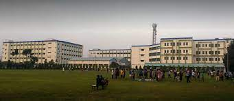
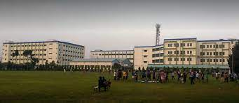

"Education is the manifestation of the perfection already in man" -
Swami Vivekananda Everyone comes in this world along with inherent
qualities, but to express his qualities, needs education. Education is
not only a knowledge of known subjects, but also development of
character building, perfection in logic, power of memory,
farsightedness, vision and decision, power and innovative imagination.
With this guideline, students can stand at their own as a ‘complete
man’. Asansol Engineering College was established in the year 1998
with a mission to impart quality technical education matching the
constantly changing global standards. The college is approved by All
India Council for Technical Education (AICTE) and is affiliated to
Maulana Abul Kalam Azad University of Technology (MAKAUT), West Bengal
(Formerly known as West Bengal University of Technology). We have an
excellent combination of industry professionals and academicians on
our faculty, who provide a holistic view of the engineering operations
to our students. The college has well qualified, experienced and
dedicated faculty and supporting staff, state of art laboratories and
workshop facilities. The college has a full-fledged Placement and
Training Centre that has been able not only to place our college
students in various national and multinational organizations, research
and education institutions but also many students have been motivated
for higher study in our country and abroad. Thus Asansol Engineering
College has become one of the premier institutions in West Bengal with
research centric facilities. The college encourages faculty members to
acquire higher degrees, to publish papers/text books and participate
in seminar/workshop/conferences to enhance the knowledge of faculty as
well as students. Dr. Abdul Kalam said “Dream is not that what you see
in sleep, but Dream is the thing which does not allow you to sleep”.
Keeping this in mind together our faculty, staff and student always
strive for an all-round development of students as a complete man and
to achieve their goal.
 
